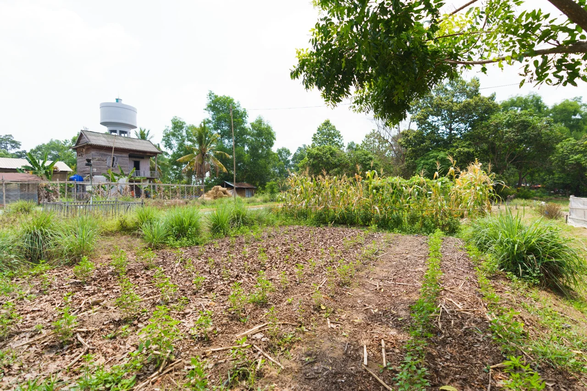

Agroecology: a starting point
An introduction to agroecology and why knowledge needs to fit local contexts.
FAOExplore trusted resources on agroecology and agroforestry, with starting questions for Cambodian farms and communities.
4 items
An introduction to agroecology and why knowledge needs to fit local contexts.
FAO
A framework for thinking about farming, people, knowledge, and food systems together.
FAO
A Khmer-language entry point to regional guidance on agroforestry development.
CIFOR-ICRAF
Explore how trees and agricultural production can form an integrated system.
CIFOR-ICRAF · listed by FAONo matches yet. Try another topic or clear your search.
These resources belong to their original publishers. Dassatek’s discussion questions help connect them with local realities. Field decisions should draw on community knowledge, site conditions, and relevant technical advice.
Have a useful resource or research connection? Get in touch.
Connect with us about partnerships, research, learning, or an idea worth exploring.